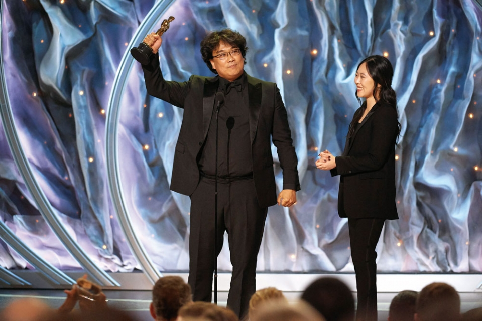
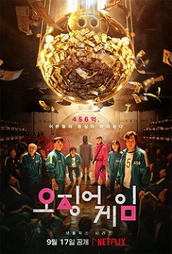
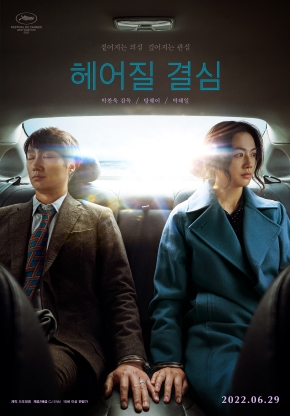
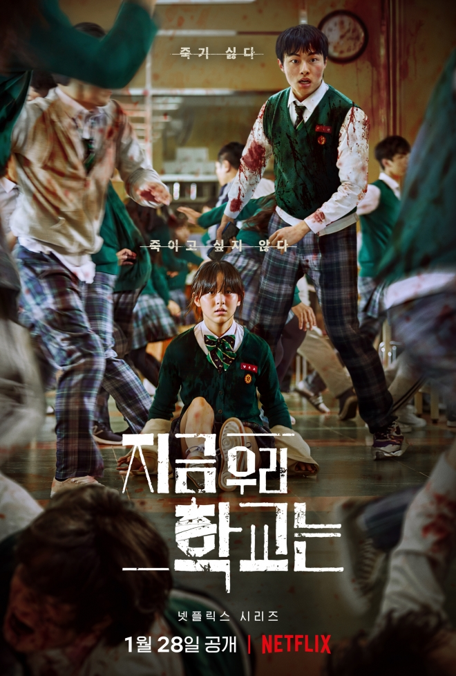

《기생충》(寄生蟲, Parasite)은 2019년 5월 30일에 개봉한 대한민국의 블랙 코미디 서스펜스 영화이다. 봉준호의 일곱 번째 장편 영화로, 한진원과 공동 각본을 썼다. 이 영화는 송강호, 이선균, 조여정, 장혜진, 이정은, 최우식, 박소담과 박명훈 등이 출연한다. 대한민국에서 천만 명 이상의 관객을 동원하며 흥행하였으며, 제72회 칸 영화제 공식경쟁부문에 초청되어 5월 21일 칸에 위치한 뤼미에르 극장에서 공식 스크리닝이 진행되었으며, 황금종려상 수상작인 2013년 《가장 따뜻한 색, 블루》 이래 만장일치로 수상한 최초의 대한민국 영화가 되었다. 2019년 5월 30일에 CJ 엔터테인먼트 배급으로 대한민국에서 개봉되었다. 이 영화는 비평가들로부터 폭 넓은 찬사를 받았으며, 2019년 최고의 영화 중 다수로 선정되었다. 지금까지 전세계에서 2억 5,755만 달러의 흥행 수익을 벌어들어 가장 높은 수익을 올린 영화이자 대한민국에서 세 번째로 높은 수익을 올리는 영화가 되었다. 수 많은 수상 목록 중에서도 《기생충》은 제77회 골든 글로브상에서 작품상, 감독상, 외국어 영화상 3개 부문에 후보로 선정되었으며, 한국 영화 최초로 외국어영화상을 수상했다. 미국 배우 조합상(SAG)에서 캐스팅 앙상블상을 수상한 최초의 비영어권 영화가 되었다. 제73회 영국 아카데미 영화상에서 작품상, 감독상, 각본상과 외국어 영화상 4개 부문에 후보로 지명되어 각본상과 외국어 영화상을 수상하였다. 영국 아카데미 영화상에서 작품상 후보에 오른 것은 한국 최초이다. 제92회 아카데미상에서 작품상, 감독상과 각본상, 국제영화상, 편집상, 미술상 6개 부문에 후보로 지명되었으며, 국제영화상 부문 후보로 오른 최초의 한국 영화가 되었다. 영화는 비평가들의 큰 호평을 받아 작품상, 국제영화상, 감독상, 각본상의 4개의 상을 수상하는 쾌거를 이뤄내며, 역대 시상식 사상 작품상을 수상한 최초의 비영어 영화가 되었다.
《오징어 게임》(Squid Game)은 2021년 넷플릭스에서 방영한 대한민국의 액션 서스펜스 생존 드라마이다. 9화로 구성되며 황동혁이 각본과 감독을 맡았다. 이정재, 박해수, 위하준, 정호연, 오영수, 허성태, 아누팜 트리파티, 김주령, 이유미, 이병헌, 공유 등이 출연했다. 이 시리즈는 456억 원의 상금이 걸린 의문의 서바이벌 게임에 참가한 사람들이 총 6개의 어린이 게임을 통과하고 최후의 승자가 되기 위한 죽음의 게임에 도전하는 드라마이다. 2021년 9월 17일에 넷플릭스를 통해 전 세계에 방영을 시작했으며,세계적인 관심을 받았다. 2021년 10월 1일 넷플릭스가 정식 서비스되는 국가 중에서 인도를 제외한 모든 국가에서 넷플릭스 시청률 1위를 달성했다. 그리고 2021년 10월 2일 인도에서 1위를 달성하며, 넷플릭스가 정식 서비스되는 모든 국가에서 1위를 기록한 첫 대한민국 작품이 되었다. 2021년 11월 8일, 황동혁 감독은 오징어 게임의 시즌 2를 공식화했으며 현재 사전 제작 단계임을 밝혔다. 제74회(2022년) 프라임타임 에미상 시상식에서 드라마부문 감독상, 드라마부문 남우주연상을 수상했다. 이는 각각 에미 시상식 사상 비영어권 드라마로서 최초의 기록이다.
《헤어질 결심》은 2022년 대한민국의 미스터리, 로맨스 영화이다. "헤어질 결심"은 산에서 벌어진 변사 사건을 수사하게 된 형사 ‘해준’(박해일)이 사망자의 아내 ‘서래’(탕웨이)를 만난 후 의심과 관심을 동시에 느끼며 시작되는 이야기를 그린 영화다. 박찬욱이 연출하고 박해일과 탕웨이가 주연을 맡았다. 박찬욱과 정서경이 각본을 공동 작업하였다. 2022년 4월에 2022년 칸 영화제 황금종려상 경쟁 부문에 진출했으며, 박찬욱이 감독상을 수상하였다.
《지금 우리 학교는》은 넷플릭스에서 2022년 1월 28일부터 공개된 대한민국의 좀비 드라마이다. 좀비 바이러스가 퍼진 한 효산고등학교에 고립된 이들과 그들을 구하려는 군인을 극한의 상황을 겪으며 벌어지는 이야기이다. 넷플릭스가 매주마다 공개하는 누적 시청시간 지표에서 첫 주차 시청시간 124,790,000시간을 기록했다. 오징어게임의 첫 주차 6300만 시간, 지옥의 첫 주차 4300만 시간의 2~3배에 달하는 엄청난 초반 기세를 보이고 있다. 해당 기록은 넷플릭스 한국 드라마중 첫 주차 역대 1위, 전체 넷플릭스 드라마 첫 주차 역대 5위의 기록이며, 후속 시즌이 아닌 시즌1의 첫 주차 기록으로는 역대 넷플릭스 드라마 중 가장 높은 성적이다.
